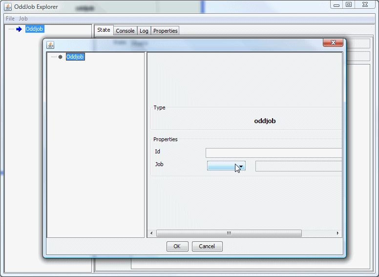
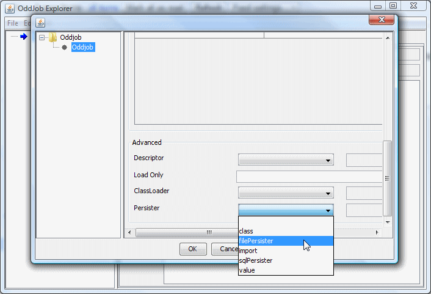
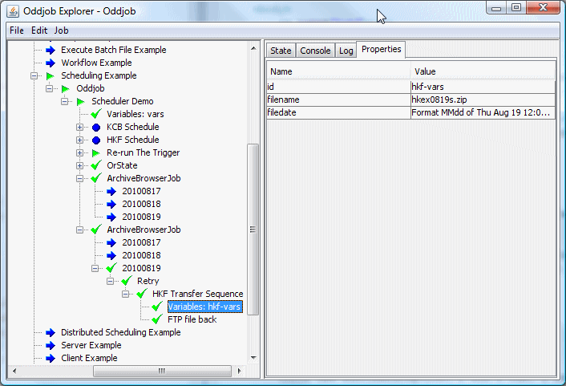

So where were we?
Whether it's a server crash or a deliberate restart, we want our scheduled job sequences to know where they were. We want them to recover. We want them to pick themselves up, dust themselves off and to carry on as if nothing had happened.
Oddjob helps it's jobs to have this resilience by providing a facility for jobs to save their state. Oddjob leaves it to each job to decide when to request it's state be saved, and then delegates the request to a persister. The persister is a configured property of Oddjob. It is set by the aptly named 'persister' property. By default Oddjob has no persister configured and so all requests to save state are thrown away. When Oddjob restarts everything is created a fresh. Five hour reports are ready to run again blissfully unaware that they only completed ten minutes ago and scheduled jobs take an ill-informed decision based on their configuration alone whether to run immediately or miss today all together.
Out of the box Oddjob provides two types of persister: A file-persister that saves state to the local file system, and a sql-persister-service that saves state to a database. The reference pages explain each adequately, however some extra background about Persisters might be be useful.
Now for those who've been paying attention there should be some confusion because when we create a new Oddjob there is no persister property!
So how do I explain... Oddjob is a job that loads a configuration, and what we are editing is that configuration, not the configuration for Oddjob itself. There is a persister property on the Oddjob that Oddjob Explorer has created, but Oddjob Explorer doesn't let us set that. The reasoning behind this is that most of the time Oddjob will be running on a server and so Oddjob will need to be configured via some kind of configuration file, and what's a great way of configuring things? Why Oddjob of course.
To configure Oddjob, we use Oddjob. Think of it kind of like boot-strapping. lets set Oddjob to be our only job, and then we can configure the persister:
Both our file and SQL persisters use the id of a job. Job's are stored and restored by id. JOBS WITHOUT AN ID ARE NOT STORED.
Once a persister has been configured on Oddjob it applies to all nested Oddjobs until a nested Oddjob has a different persister configured. It's not possible for two jobs within an Oddjob configuration to have the same id, but it is possible for two jobs within different nested Oddjob configurations to have the same id. The path to each is however different. Our persister uses the paths to differentiate between the two. For there to be a valid path to our jobs each Oddjob between the persister and the job must have an id. Some jobs aren't persisted even with an id. They are termed Transient jobs. Oddjob is an example of such a job. It's state is purely derived from it's child.
Persisted state deletion isn't an exact science but it sort of makes sense in most situations. Here's the rules:
1. When a job is destroyed (deleted, dragged, cut or it's configuration is edited) it's persisted state is removed.
2. Except Oddjob - when Oddjob is destroyed (deleted, dragged, cut or it's configuration is edited, or the oddjob instance is shutdown, via Explorer or using Ctrl-C) nothing is removed, not any of it's child jobs or any nested Oddjobs.
The ambiguity arises because Oddjob doesn't know if it's being destroyed as the result of shutdown or as the result of a configuration edit. This will be fixed in future releases.
Oddjob is able record snapshot of the state of it's children. It achieves this using a archive job. This will capture a 'silhouette' of it's child's state and properties, and it's children's children, so long as the are in the current Oddjob Session. It won't capture the state of remote jobs or jobs in a nested Oddjob.
An archive can be viewed with an archive-browser
Running the browser displays the available archived runs as child jobs. Running one of these instances shows the silhouettes captured by the archiver.
Archiving, and Oddjob persistence in general doesn't persist logs. It is planned to add this at some point.